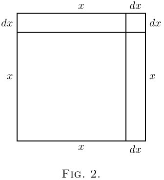
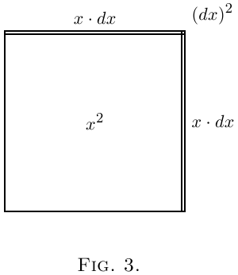

最后，假设为了某个非常精密的用途， 我们把 $\frac{1}{1,000,000}$ 看作“小”。比如，一只一流的精密计时器， 如果一年内快慢不能超过半分钟，它的走时精度就必须达到 $1$ 份对应 $1,051,200$ 份的精度。现在，为了这样的用途， 如果我们把 $\frac{1}{1,000,000}$（一百万分之一）看作小量， 那么 $\frac{1}{1,000,000}$ 的 $\frac{1}{1,000,000}$， 也就是 $\frac{1}{1,000,000,000,000}$（一万亿分之一†）， 就是二阶小量，相比之下完全可以丢开不管。
于是我们看出，一个小量本身越小，相应的二阶小量就越可以忽略。 因此我们知道，只要一阶小量本身取得足够小， 我们在任何情况下都有理由忽略二阶、三阶（或更高阶）小量。
不过必须记住，如果小量在表达式中作为因子， 还要乘以某个别的因子，那么当另一个因子本身很大时， 这个小量可能就变得重要了。哪怕是一枚四分之一便士， 只要乘上几百，也会变得重要。
在微积分里，我们用 $dx$ 表示 $x$ 的一小点。 像 $dx$、$du$、$dy$ 这样的东西叫作“微分”， 分别是 $x$、$u$ 或 $y$ 的微分。 [你读它们时读作 dee-eks、dee-you 或 dee-wy。] 如果 $dx$ 是 $x$ 的一小点，而且它本身相对来说很小， 这并不意味着 $x · dx$、$x^2\, dx$ 或 $a^x\, dx$ 这样的量也可以忽略。 但是 $dx × dx$ 可以忽略，因为它是二阶小量。
一个非常简单的例子可以说明这一点。
把 $x$ 想成一个可以增加一小点的量，增加后变成 $x + dx$， 其中 $dx$ 就是增长时添上的小增量。 它的平方是 $x^2 + 2x · dx + (dx)^2$。 第二项不可忽略，因为它是一阶量；第三项则是二阶小量， 因为它是 $x^2$ 的一小点的一小点。 比如，如果数值上把 $dx$ 看作 $x$ 的 $\frac{1}{60}$， 那么第二项就是 $x^2$ 的 $\frac{2}{60}$， 而第三项就是 $x^2$ 的 $\frac{1}{3600}$。 最后这一项显然没有第二项重要。 但如果我们进一步把 $dx$ 只看作 $x$ 的 $\frac{1}{1000}$， 那么第二项就是 $x^2$ 的 $\frac{2}{1000}$， 而第三项只有 $x^2$ 的 $\frac{1}{1,000,000}$。
 从几何上可以这样画出来：
画一个正方形（图 1），把它的边长看作 $x$。
现在假设这个正方形每个方向都添上一小段 $dx$，于是变大了。
放大的正方形由原来的正方形 $x^2$、上方和右方的两个长方形，
以及右上角那个小正方形组成。两个长方形的面积各为 $x · dx$，
合起来就是 $2x · dx$；右上角的小正方形面积是 $(dx)^2$。
在 图 2 中，我们把 $dx$ 取成 $x$ 的一个相当大的部分，大约是 $\frac{1}{5}$。
但假设我们只取 $\frac{1}{100}$，大约就是用细笔画出的一条墨线的厚度。
那么那个角上的小正方形面积只有 $x^2$ 的 $\frac{1}{10,000}$，
实际上就看不见了。显然，只要我们认为增量 $dx$ 本身足够小，
$(dx)^2$ 就可以忽略。
 我们再看一个比喻。
假设一位百万富翁对他的秘书说：
下周我进账的任何钱，都给你一小部分。
又假设秘书对他的男孩说：我拿到的钱，也给你一小部分。
假设两次所说的比例都是 $\frac{1}{100}$。
那么如果百万富翁先生下周收到 £$1000$，
秘书就会收到 £$10$，男孩则会得到 $2$ 先令。
十英镑和 £$1000$ 相比是个小量；
但两先令确实是一个小小量，已经是相当次一级的量了。
如果这个比例不是 $\frac{1}{100}$，而是定为 $\frac{1}{1000}$，
差距又会怎样呢？那时，百万富翁先生拿到 £$1000$，
秘书先生只会得到 £$1$，而男孩拿到的还不到一枚四分之一便士！
机智的斯威夫特院长*
曾写道：
一头牛也许会为普通大小的跳蚤烦恼，
那是一阶小量的小生物。
但它大概不会操心跳蚤身上的跳蚤；
那是二阶小量，可以忽略。
即使有一罗跳蚤身上的跳蚤，对牛来说也算不上什么。

于是，博物学家观察到，跳蚤
身上还有更小的跳蚤叮它。
这些小跳蚤又被更小者咬，
如此继续，无穷无尽。"
下一章 →
主页 ↑